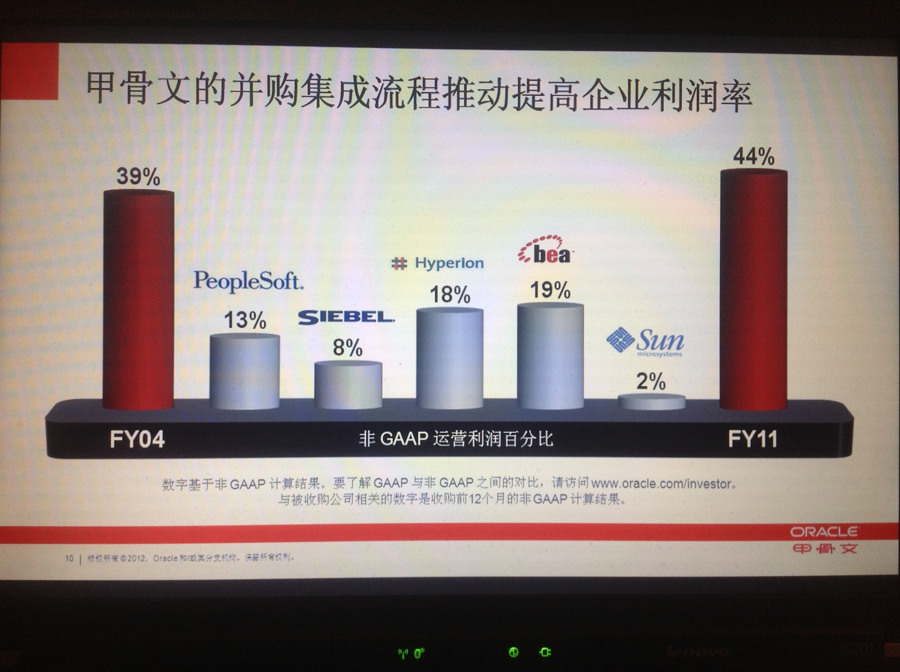
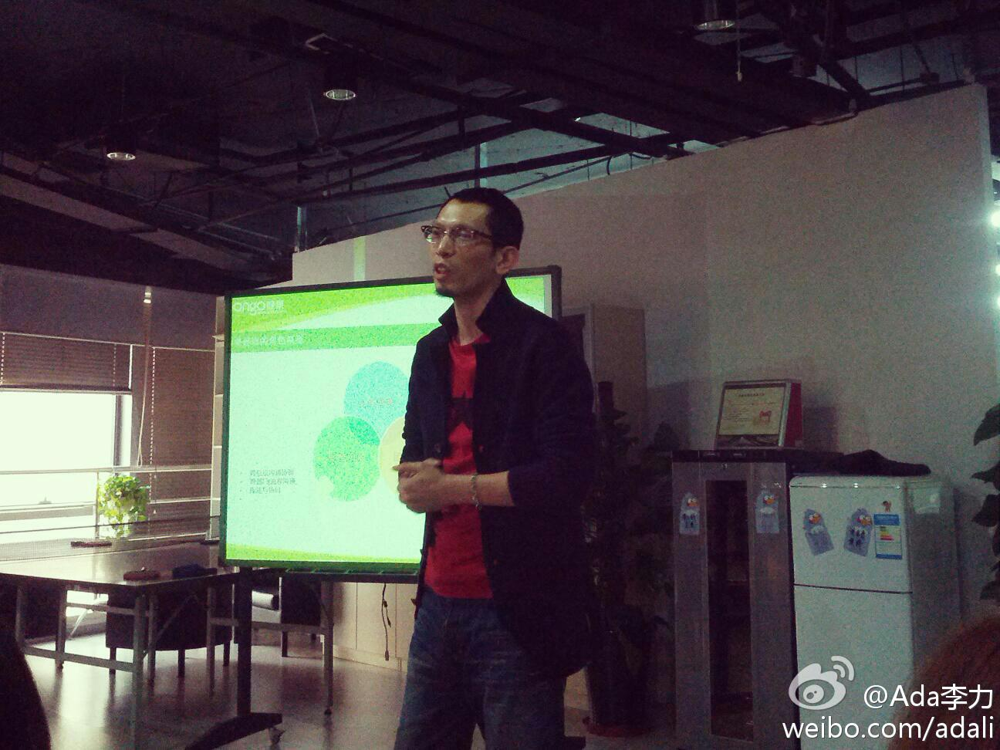
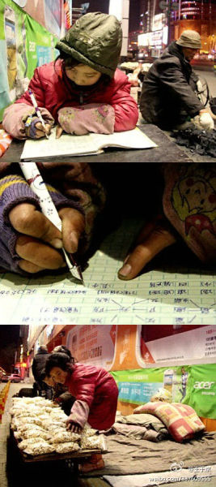

这些曾经的好公司都是获得过暴利的公司，例如朗讯，Sun, 至少有一段时间的高利润才能保证高福利，不过事情都是变化的，等到大多数人都知道这是家好公司时，已经是开始走下坡路的时候了。@刘松--云时代:消失的＂好公司＂：2000年前后，IT圈的公司非常多，有些人不断跳槽，说这么多公司，每个工作两三年，到退休都跳不完。外企雇员嘴里也有很多＂好公司＂，收入高，福利好，压力不大，不那么结果导向，尊重人，做生意容易。基本上，对技术公司而言，公司运营利润越低，越是普通员工认为的好公司 
中国的劳动法确实倾向雇员，而这对中国的程序员来说真是好消息。但风险高的职业，意味着收入和机会要大些。@思考的蛋:某同事告诉我，加州的公司严重保护雇主而不是员工，解雇员工可以没有理由，普通员工能拿到N+1的补偿，但计算单位不是月薪，而是周薪。经历了三次这样的事情之后，她现在不相信任何一个老板。根据历次变动来看，程序员是最安全的，最危险的是市场和销售。
昨天@八爪李炯明 在公司内部做了“面试与聘用技巧”，我印象颇深的是这句话：预测人未来行为最好的指标是其过往发生的行为。招聘中各种问题的设置即是围绕这句话进行。另外这也是提醒职场中人，你做过的事情都会成为个人信誉的一部分，进而影响将来。 
我家乡的孩子… 她以后能改变自己的命运吗？//@阿忆:穷人的好孩子! //@肖雪慧：帮帮这个在崛起大国里一个马路边路灯下做作业、卖爆米花的9岁小女孩。@王于京:【9岁女孩寒夜街头售爆米花 借路灯做功课】在河南平顶山平声影剧院门前，昏暗的路灯下，9岁的小女孩齐聪聪一会儿趴在马路边认真写作业，一会儿帮爷爷卖爆米花。女孩衣服满是污渍、手冻得红肿，但神情专注让人心疼。网页链接 PS:希望更多人碰见他们时能买包爆米花。 
姣姣感冒了，咳嗽发烧，晚上我和她睡，明俊提醒我半夜叫姣姣起来喝药，我说没这种事情，半夜叫人起来喝药，我住医院时护士也没这么给病人喂药的。明俊的依据是说明书上写每隔六小时吃一次药。我说那是排除掉正常睡眠时间的吃药时间，然后我俩互相说对方不懂。问下有懂的人吗？
明天姣姣学校开联谊会，不带书包，不规定服装。因为她咳嗽发烧，明俊跟她商量，明早不去学校了？姣姣说要去。再问准备换什么衣服？姣姣说就穿校服。- 唉，俺闺女咋是这样的好学生呢? 又红又专的范儿，不像妈也不像爸。